01 / 21
Disponible
 IMAGEN · PINTURA DIGITAL
IMAGEN · PINTURA DIGITAL
NVTS-PhotoMania
Aplicación de edición raster, ilustración y composición digital.
Reúne herramientas de pintura, selección y retoque, capas, máscaras,
filtros, ajustes y estilos no destructivos, además de guías, simetría y
recursos para preparar páginas de cómic e imágenes para
impresión.
Visitar aplicación
↗
02 / 21
En desarrollo / planificación
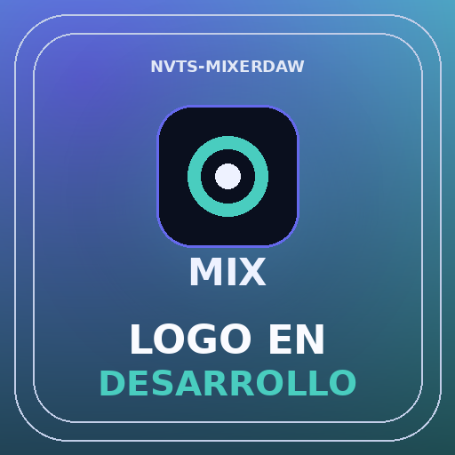
AUDIO · PRODUCCIÓN MUSICAL
NVTS-MixerDAW
Estación de trabajo de audio digital para crear música y sonido:
grabación multipista, edición de audio, secuenciación MIDI,
instrumentos, efectos, mezcla, automatización y masterización para
videojuegos, videos y producciones musicales.
03 / 21
En desarrollo / planificación
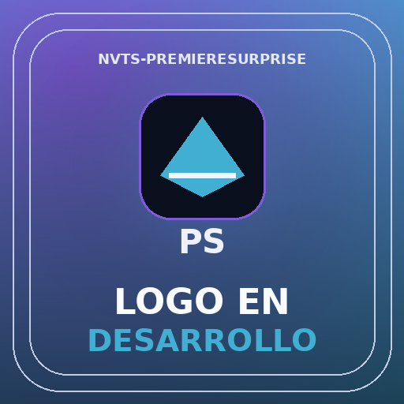
VIDEO · EDICIÓN Y POSTPRODUCCIÓN
NVTS-PremiereSurprise
Editor de video no lineal para montar producciones audiovisuales con líneas de tiempo
multipista, edición de clips, transiciones, títulos, efectos,
corrección de color, mezcla de audio, subtítulos y exportación de
proyectos.
04 / 21
En desarrollo / planificación
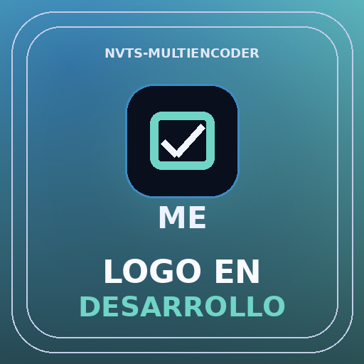
MEDIA · CODIFICACIÓN Y EXPORTACIÓN
NVTS-MultiEncoder
Herramienta de codificación y conversión multimedia para procesar archivos por
lotes, administrar colas de exportación, elegir formatos y códecs, configurar
resolución, tasa de bits, calidad y perfiles de salida para diferentes plataformas.
05 / 21
En desarrollo / planificación
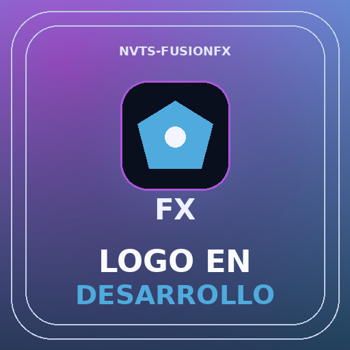
VFX · COMPOSICIÓN Y EFECTOS VISUALES
NVTS-FusionFX
Entorno de composición digital para crear efectos visuales y motion graphics.
Permitirá combinar imágenes y secuencias mediante capas y nodos,
máscaras, keying, tracking, rotoscopia, corrección de color y procesamiento de
efectos.
06 / 21
En desarrollo / planificación
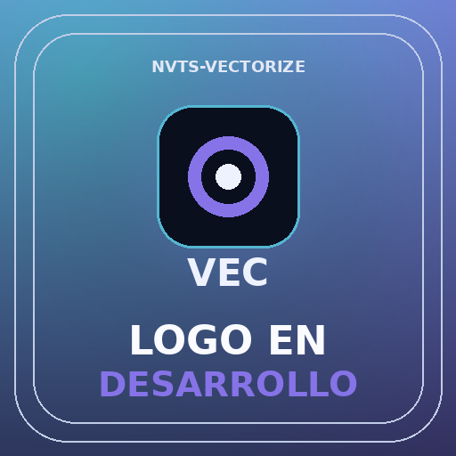
DISEÑO · ILUSTRACIÓN VECTORIAL
NVTS-Vectorize
Aplicación de dibujo y diseño vectorial para crear ilustraciones escalables,
logotipos, iconos y piezas gráficas. Incluirá trazados Bézier, formas,
nodos, tipografía, pinceles, rellenos, degradados, capas y exportación a
formatos vectoriales y de imagen.
07 / 21
En desarrollo / planificación
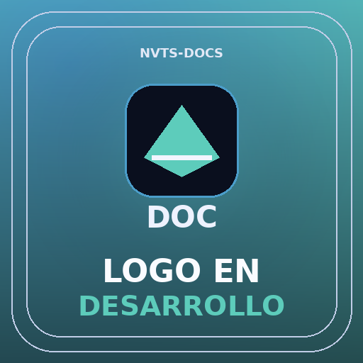
PRODUCTIVIDAD · DOCUMENTOS
NVTS-Docs
Procesador de textos para redactar y estructurar documentos, informes y material de trabajo,
con formato tipográfico, estilos, tablas, imágenes, encabezados,
numeración, plantillas, revisión y exportación a formatos habituales.
08 / 21
En desarrollo / planificación
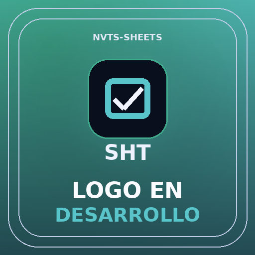
PRODUCTIVIDAD · HOJAS DE CÁLCULO
NVTS-Sheets
Aplicación de hojas de cálculo para organizar datos y realizar análisis
mediante celdas, fórmulas, funciones, referencias, filtros, ordenamiento, tablas,
gráficos y herramientas de cálculo y seguimiento.
09 / 21
En desarrollo / planificación
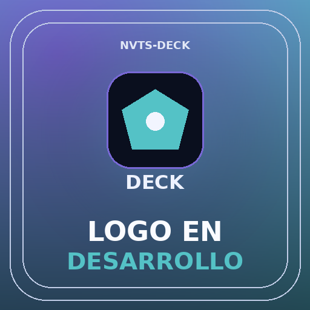
PRODUCTIVIDAD · PRESENTACIONES
NVTS-Deck
Herramienta para crear presentaciones visuales con diapositivas, temas, plantillas,
patrones, texto, gráficos, imágenes, video, transiciones y animaciones, con
opciones para presentar y exportar el resultado.
10 / 21
En desarrollo / planificación
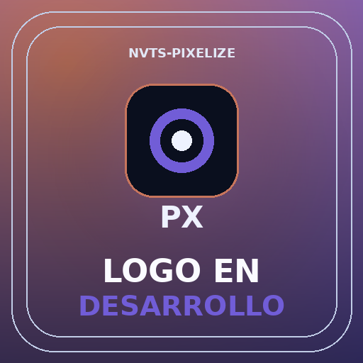
ARTE 2D · PIXEL ART Y SPRITES
NVTS-Pixelize
Editor especializado en pixel art para dibujar y animar sprites, personajes, tiles y
escenarios. Estará orientado al trabajo por capas y fotogramas, línea de
tiempo, onion skin, paletas, spritesheets, ciclos de animación y recursos para
videojuegos.
11 / 21
En desarrollo / planificación
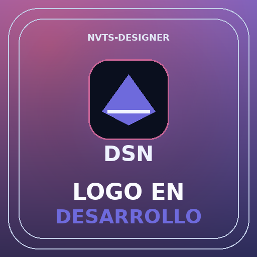
DISEÑO EDITORIAL · MAQUETACIÓN
NVTS-Designer
Suite integral de maquetación y diseño editorial para producir libros,
revistas, periódicos, catálogos, folletos y publicaciones multipágina.
Permitirá organizar marcos de texto enlazados, retículas, columnas,
tipografía, estilos de párrafo, carácter y objeto, páginas
maestras, secciones, numeración, tablas, índices, tablas de contenido, notas y
vínculos. Incluirá comprobación previa de documentos, sangrados, marcas
de corte, empaquetado de recursos y exportación de originales listos para imprenta y
distribución digital, incluidos PDF y EPUB.
12 / 21
En desarrollo / planificación
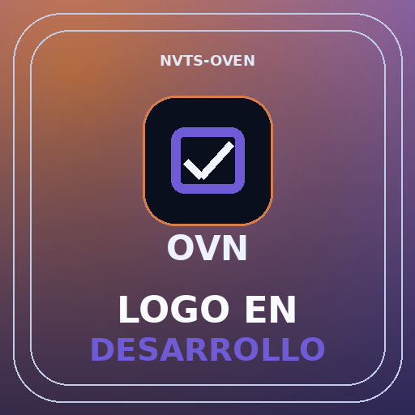
3D · MODELADO, ANIMACIÓN Y PRODUCCIÓN
NVTS-Oven
Suite integral de creación y producción 3D que cubrirá el flujo
completo de trabajo: modelado poligonal y procedural, escultura digital, retopología,
geometría procedural, UV mapping, creación y edición de materiales,
texturizado y pintura 3D, shaders, composición y montaje de escenas, cámaras e
iluminación, rigging, animación, simulaciones físicas y renderizado.
También incluirá herramientas para preparar, hornear, revisar y optimizar
modelos, materiales y recursos 3D para videojuegos, animaciones, cinemáticas y
visualizaciones.
13 / 21
En desarrollo / planificación
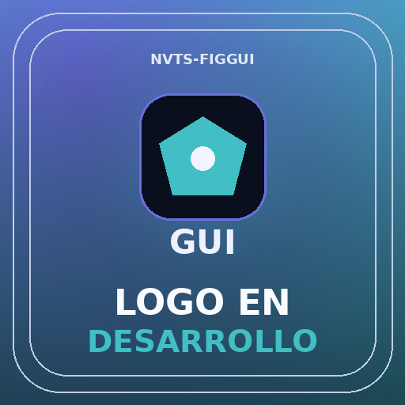
DISEÑO DE INTERFACES · PROTOTIPADO
NVTS-FigGUI
Herramienta de diseño de interfaces y experiencias digitales para crear wireframes,
pantallas, componentes reutilizables, sistemas de diseño y prototipos interactivos.
Permitirá organizar flujos de navegación y visualizar diseños adaptados
a distintas pantallas.
14 / 21
En desarrollo / planificación
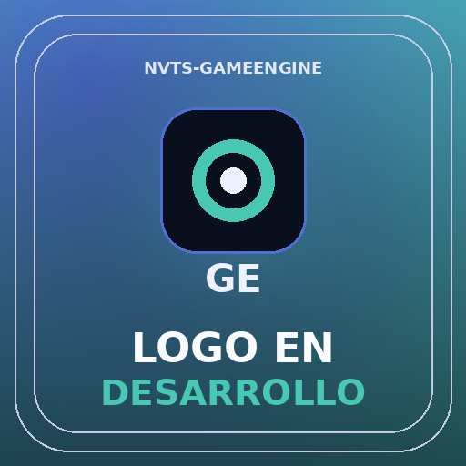
DESARROLLO · VIDEOJUEGOS Y PRODUCCIÓN INTERACTIVA
NVTS-GameEngine
Motor para crear videojuegos y producciones animadas 2D, 3D e híbridas.
Incluirá organización de escenas, entidades, recursos, lógica,
animación y sistemas de interacción, con ejecución y renderizado en el
navegador del usuario mediante tecnologías gráficas web.
15 / 21
En desarrollo / planificación
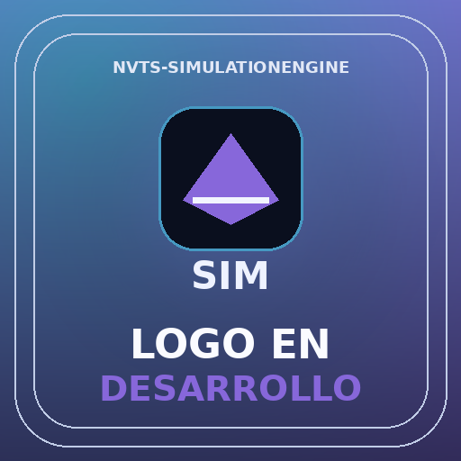
SIMULACIÓN · EXPERIMENTACIÓN Y VIDEOJUEGOS
NVTS-SimulationEngine
Motor para diseñar, configurar, ejecutar y visualizar simulaciones interactivas y
sistemas dinámicos en 2D y 3D. Permitirá trabajar con física, cuerpos
rígidos, colisiones, partículas, fluidos, telas, destrucción,
comportamientos y fenómenos emergentes. Tendrá dos usos complementarios: crear
simulaciones independientes para experimentación, aprendizaje y visualización;
e integrar sistemas simulados en tiempo real dentro de videojuegos, conectándose con
NVTS-GameEngine para probar y controlar sus comportamientos durante el desarrollo y la
ejecución del juego.
16 / 21
En desarrollo / planificación
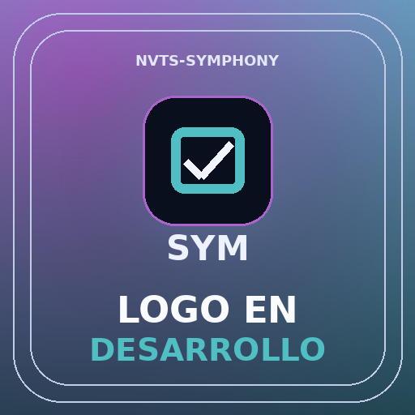
ANIMACIÓN 2D · PRODUCCIÓN AUDIOVISUAL
NVTS-Symphony
Suite integral de animación 2D para cortos, series y producciones audiovisuales.
Estará orientada al dibujo y la animación cuadro a cuadro, líneas de
tiempo, interpolación, símbolos, rigs, cut-out, sincronización,
escenas, cámara y composición.
17 / 21
En desarrollo / planificación
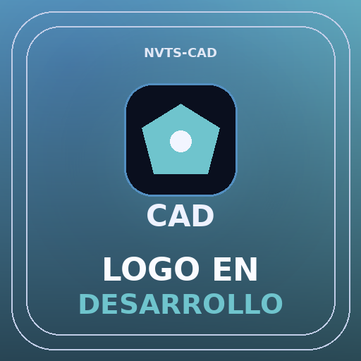
DISEÑO TÉCNICO · CAD
NVTS-CAD
Herramienta de diseño asistido por computadora para crear planos y modelos
técnicos con precisión. Incluirá dibujo 2D, modelado, cotas,
restricciones, medidas, componentes y documentación técnica para desarrollar y
comunicar diseños.
18 / 21
En desarrollo / planificación
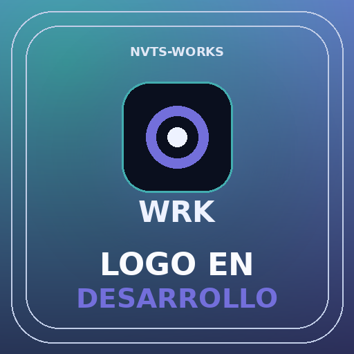
GESTIÓN · ORGANIZACIÓN DEL ESTUDIO
NVTS-Works
Plataforma interna de NamuVT Studios para organizar equipos, proyectos y tareas mediante
tableros Kanban, backlog, incidencias, prioridades, responsables, sprints, calendarios,
hitos, seguimiento y reportes de avance.
19 / 21
En desarrollo / planificación
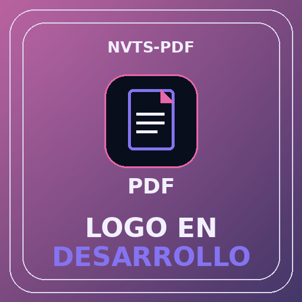
DOCUMENTOS · GESTIÓN DE PDF
NVTS-PDF
Herramienta integral para visualizar, crear, editar y organizar documentos PDF.
Permitirá combinar y dividir archivos, reordenar páginas, editar texto e
imágenes, realizar anotaciones, completar y generar formularios, añadir
firmas, gestionar permisos, aplicar OCR y exportar documentos optimizados.
20 / 21
En desarrollo / planificación
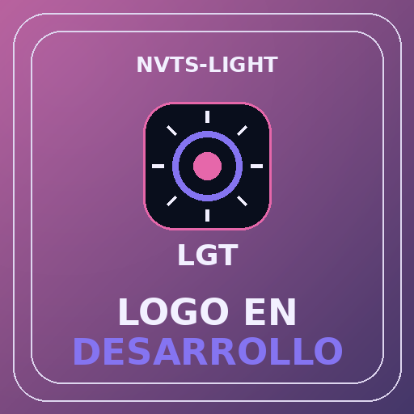
FOTOGRAFÍA · REVELADO Y GESTIÓN
NVTS-Light
Entorno de gestión y revelado fotográfico para importar, catalogar, clasificar
y organizar bibliotecas de imágenes. Incluirá gestión de metadatos,
colecciones, etiquetas, palabras clave, valoración, edición no destructiva,
revelado RAW, ajustes de luz y color, corrección óptica, presets y
exportación.
21 / 21
En desarrollo / planificación
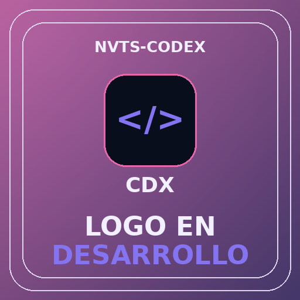
DESARROLLO · EDICIÓN Y PROGRAMACIÓN
NVTS-Codex
Editor de código y entorno de desarrollo para trabajar con proyectos de software y
videojuegos. Contará con resaltado de sintaxis, autocompletado, navegación de
código, búsqueda avanzada, terminal integrada, depuración,
gestión de proyectos, control de versiones, extensiones y herramientas para
múltiples lenguajes y tecnologías.